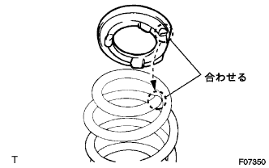
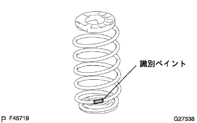
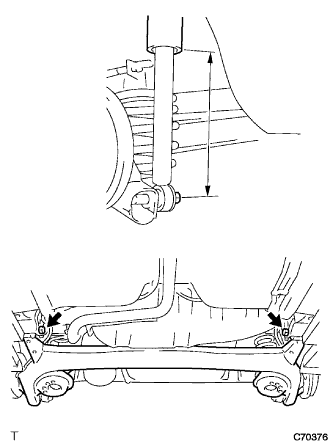

Rear axle beam installation |
| 1. Lear Axle Carybush LH installation |
Temporarily attach the new Bush cut and the rear axle beam combination mark.
Use SST to attach the bush to the rear axle beam.
| 2. Rear axle carriabsch RH installation |
| 3. Rear Axle Beam ASSY temporary tightening |
 |
With two bolts, temporarily attach the rear axle beam.
| 4. Coil spring RR LH installation |
Rear coil spring insulator LWR LH is attached to Axle Beam ASSY.
|  |
Attach the coil spring LH lh to the end surface of the upper side and the rear coil spring insulator UPR LH stop.
|  |
The identification paint is set to the lower and rear of the vehicle, and the rear coil spring LH is attached to the rear axle beam ASSY.
| 5. Coil spring RR RH installation |
| 6. Shock Absorber ASSY RR LH temporary tightening |
 |
Jack supports the rear axle beam ASSY via a piece of wood.
Gradually raise the jack, attach the shock absorber ASSY LH (lover side) to the rear axle beam ASSY, and temporarily tighten it with a nut via the rear shock absorbus pacer.
 |
Fix the two -sided width of the rear shock absorber ASSY LH and tighten the new nut to the standard value.
Fix the two -sided width of the rear shock absorber ASSY LH and tighten the new lock nut.
| 7. Shock absorber ASSY RR RH temporary tightening |
| 8. Rear axle hub & bearing Assisted |
Attach the rear brake ASSY to the rear axle beam.
 |
With four bolts, attach the rear axle hub & bearing Association to the rear axle beam.
 |
In the nut, attach the parking brake cable Assyo No.3 to the rear axle beam.
| 9. Rear axle hub & bearing Assisted |
| 10. Lear brake drum installation |
| 11. Adjustment of brake drums and lining gaps |
 |
Turn the adjuster with a flathead screwdriver from the backing plate service hall, and let the brake shoe ASSY contact the rear brake drum.
 |
Turn the adjuster by turning the adjuster with another flathead screwdriver while pressing the rear brake automatic adjust lever LH with a flathead screwdriver.
The brake shoe Assy is no longer in contact with the rear brake drum, and the adjuster is further reduced to contract to contract.
| 12. Flexible hose bracket No.4 installation |
 |
Attach a flexible hose bracket to the rear axle beam with a bolt.
| 13. Flexible hose bracket No.3 installation |
| 14. Rear brake tube No.4 connection |
 |
Use a union nut wrench to attach the No.4 brake Yoube.
Attach the clip.
| 15. Rear brake tube No.3 connection |
| 16. Skid control sensor wire connection |
Attach a skid control sensor connector.
| 17. Calm down the vehicle |
Attach the rear tire.
The vehicle is jacked down and shakes up and down several times to calm the rear suspension.
| 18. Rear Axle Beam ASSY main tightening |
Calm the vehicle.
|  |
Through a piece of wood, jack up the rear axle beam until the shock absorber becomes a reference value, and tighten the mounting bolt.
| 19. Shock Absole ASSY RR LH LH main closure |
Shock Absorber ASSY LH (Lower side) nuts are tightened.
| 20. Shock absorber ASSY RR RH main closure |
| 21. Listed squirrel cap installation |
| 22. Brake system -type air removal |
Brake fluid replenishment
 |
Stand up the brake fluid can on the reservoir.
Master Cylinda Air
Use Union Nut Wresten 10 to separate the two brake tubes from the brake master cylinder Assy.
 |
Slowly step on the brake pedal and hold that state.
 |
Close the tube hole with your finger and release the brake pedal.
Release your finger, slowly step on the brake pedal, hold the tube hole again, release the brake pedal, and repeat it three or four times.
Use the Union Nut wrench 10 to connect two brake tubes to the brake master cylinder asser.
Brake -based system air removal
Connect the vinyl tube to the buder plug.
Press the brake pedal several times and loosen the buder plug while stepping on the brake pedal.
When the brake fluid does not come out, tighten the bruder plug and put the brake pedal.
Repeat until the air is mixed in the brake fluid.
Similarly, remove the air from the brake line of each wheel.
Brake fluid quantity inspection
Check the amount of brake fluid, and replenish the brake fluid to the MAX position if necessary.
| 23. Rear wheel alignment inspection |
reference)| 24. Test mode inspection (speed sensor system) |
reference)